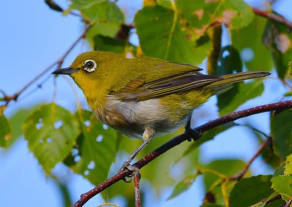
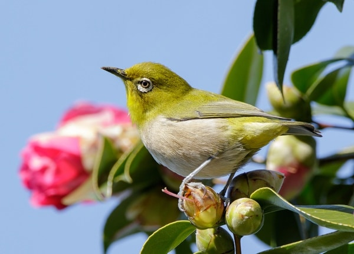
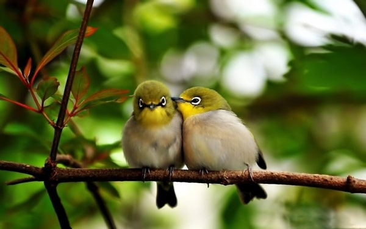

Chim khuyên – Ăn gì, giá nhiêu? Luyện khuyên líu chòe
Chim khuyên là một loài chim thuộc bộ Sẻ; tên tiếng Anh là White-eye (mắt trắng) bởi đôi mắt có viền trắng bao quanh. Riêng phần đầu và cánh có màu xanh rất nổi bật.
Chim khuyên chuẩn
Hình dáng: Mỏ dưới thẳng, không dày. Đầu tròn, phần gáy dài. Chim cổ phải to, đuôi lớn, ngắn để lúc líu chim xòe sẽ đẹp.
Giọng hót: Chim già sẽ có giọng hót hay hơn chim bánh tẻ. Chúng hót có vần điệu và tiếng líu dài. Những người chơi chim thường quan sát chân chim để phân biệt chim lâu năm và chim bánh tẻ. Con nào có vẩy sừng cứng, dày thì đó là chim già.
Tiếng hót
Chim khuyên sở hữu tiếng hót cao, trong. Cũng giống như chim họa mi, chim vàng anh; chim khuyên cũng có thể bắt chước tiếng hót của những giống chim khác loài.
Phân biệt chim vành khuyên trống, mái
Chim khuyên trống
Phần lưng có lông màu xanh tươi, đầu ánh vàng. Phần lông đuôi, lông cổ khuyên trống mang màu vàng tươi. Khuyên trắng ở mắt đậm, đều. Đuôi tựa vây đuôi cá. Thường thân chim trống sẽ to, dài hơn chim mái. Màu lông tổng thể chim trống tươi hơn, mỏ và đầu đầu lớn hơn.
Chim khuyên mái
Màu xanh ít tươi và tối hơn. Phần lông đuôi, lông cổ khuyên mái mang màu vàng nhạt hơn. Khuyên trắng ở mắt nhạt, thưa. Đuôi con cái thường là đuôi bằng. Màu lông tổng thể chim mái tối hơn, thân, đầu nhỏ hơn.
Chim vành khuyên giá bao nhiêu
Giá thành chim khuyên trên thị trường hiện nay tương đối đa dạng, khoảng từ 150K đến trên dưới 1 triệu tùy vào độ “xịn” của chim.
Trên đây là những thông tin cơ bản về chim khuyên. Hi vọng cung cấp được cho bạn đọc những thông tin có giá trị. Truy cập Website Gà Chọi Việt để không bỏ lỡ các thông tin hữu ích nhé!